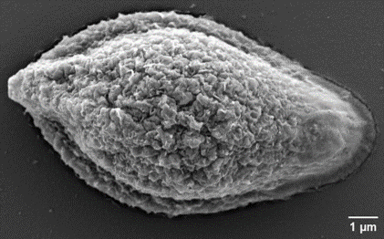

Size ↔ nucleus number
Analysis of more than 1,800 spores showed that spores with more nuclei tend to be larger, providing the physical basis for size-based enrichment.
Results & perspectives
The BOTRYPATH project connects microfluidic sorting, single-spore handling and biophysical characterization into a coherent toolbox for fungal-spore research.

Key outcomes
Analysis of more than 1,800 spores showed that spores with more nuclei tend to be larger, providing the physical basis for size-based enrichment.
A DLD device with an empirical transition around the target size range provided the best practical compromise between enrichment and recovery.
A single DLD run can yield at least one colony with homogeneous mutant DNA, although the magnitude of the purity gain varies with the biological input sample.
U-shaped traps demonstrated selective capture and on-chip viability, establishing a route towards integrated sorting and individual culture.
AFM measurements revealed significant mechanical differences between wild-type and ΔAGS spores, with the mutant showing greater deformation.
A complete microfluidic/EIS architecture was built and tested with model beads, ready for future biological impedance measurements.
Scientific caution
Perspectives
Connect DLD sorting with U-shaped single-spore isolation to simplify the route from heterogeneous transformants to individually cultured colonies.
Transfer mechanical characterization into rigid microfluidic platforms suitable for objects as stiff as fungal spores.
Measure broadband impedance signatures and assess whether they can discriminate strains, cell-wall alterations or nuclear content.